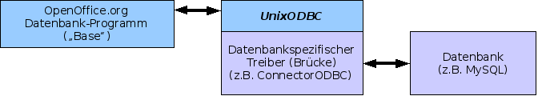

MySQL-Datenbanken in OpenOffice.org 2.0 unter Linux
Übersicht
Dieses Dokument beschreibt die notwendigen Schritte, um MySQL-Datenbanken in OpenOffice.org 2.0 unter Linux einzubinden. Dazu wird auf die Open Database Connectivity (ODBC) Schnittstelle zurückgegriffen
Hinweis: Dieses HowTo richtet sich an Nutzer, die sich bereits mit Datenbanken auseinandergesetzt haben. Hier werden lediglich die Besonderheiten beleuchtet, die bei dem Einsatz von MySQL und OpenOffice.org von Relevanz sind. Es gibt eine ausführliche Anleitung speziell für Debian GNU/Linux.
Datenbankanbindung

Bei Einsatz der Datenkankanbindung werden insgesamt drei verschiedene Produkte von drei verschiedenen Herstellern verwendet. ODBC fungiert als Brücke zwischen MySQL und OpenOffice.org.
MySQL selbst ist dazu nicht in der Lage. Deshalb muss unixODBC einen Treiber (myodbc) laden, der die Kommunikation mit dem Datenbankmanager ermöglicht.
Voraussetzungen
Um ODBC-Verbindungen zu etablieren, sind neben OpenOffice.org 2.0 und MySQL 4.1 folgende Pakete erforderlich:
- unixODBC
- unixODBC ist für das Management der Datenquellen und der ODBC-Treiber, die von den jeweiligen Datenbankherstellern angeboten werden, verantwortlich und Bestandteil gängiger Distributionen.
- MySQL Connector/ODBC 3.51 oder libmyodbc (z.B. Debian oder Mandriva)
- Dieser ODBC-Treiber von der MySQL-Webseite stellt die Schnittstelle zwischen der MySQL-Datenbank und dem unixODBC-Manager dar und ist Bestandteil gängiger Distributionen.
Konfigurieren von unixODBC
Zunächst ist der MySQL-ODBC-Treiber in die /etc/odbcinst.ini
einzutragen, falls dies nicht schon durch die Installation geschehen
ist:
[unixODBC] Description = ODBC Driver for Unix Driver = /usr/lib/libodbc.so Setup = /usr/lib/libodbcinst.so FileUsage = 1 CPTimeout = CPReuse = [MySQL] Description = MySQL driver Driver = /usr/lib/odbc/libmyodbc.so Setup = /usr/lib/odbc/libodbcmyS.so CPTimeout = CPReuse = FileUsage = 3
Die Pfade sind je nach Ort der Bibliotheken anzupassen (Kann bei den verschiedenen Distributionen unterschiedlich sein.).
Als nächstes ist die Datei /etc/odbc.ini für
systemweite Datenquellen oder auch die ~/odbc.ini für
benutzerspezifische Datenquellen anzupassen. Von systemweiten
Datenquellen ist allerdings abzuraten.
Es wird davon ausgegangen, dass eine Datenbank (hier im Beispiel test) bereits existiert.
; ; odbc.ini configuration for MyODBC and MyODBC 3.51 Drivers ; [ODBC Data Sources] myodbc3 = MySQL ODBC 3.51 Driver DSN [MySQL-test] Description = MySQL database test Driver = MySQL Server = localhost Database = test Port = 3306 Socket = Option = 3 ReadOnly = No
Einbinden der Datenbank in OpenOffice.org
Starten Sie OpenOffice.org und erstellen Sie eine neue Datenbank mittels Datei - Neu - Datenbank.
Im Datenbank-Assistent wählen Sie die Option Verbindung zu einer bestehenden Datenbank herstellen und darunter MySQL aus der Dropdown-Liste aus. Klicken Sie auf Weiter >>.
Dort besteht die Möglichkeit zwischen JDBC und ODBC auszuwählen. Wählen Sie bitte ODBC. Klicken Sie auf Weiter >>.
Geben Sie in das Textfeld den Namen der Datenquelle ein oder klicken Sie auf Durchsuchen. Eine Liste mit verfügbaren Quellen wird angezeigt, woraus Sie eine auswählen können. Klicken Sie auf Weiter >>.
Bei der Benutzerauthentifizierung geben Sie den Benutzernamen dessen ein, der die notwendigen Rechte an der Datenbank hat.
Aktivieren Sie auch das Feld Kennwort erforderlich.
-
Sie können nun einen Verbindungstest mit Klick auf den entsprechenden Button unten rechts durchführen und anschließend mit Fertig stellen fortfahren.
Sie können nun beginnen, Tabellen zu bearbeiten, Abfragen, Formulare oder Berichte zu erstellen.
Hinweis: Bitte beachten Sie, dass OpenOffice.org Tabellen ohne Primärschlüssel nicht zum Editieren freigibt. Es ist auch nicht möglich, den Schlüssel in OpenOffice.org nachträglich (wenn die Tabelle schon Daten enthält) einzufügen. Dazu müssten andere Tools genutzt werden.
This is a associate document to PostgreSQL-Datenbanken in OpenOffice.org 2.0 unter Linux (Initial Writer: Simon A. Wilper)
Public Documentation License Notice
The contents of this Documentation are subject to the Public
Documentation License Version 1.0 (the "License"); you may
only use this Documentation if you comply with the terms of this
License. A copy of the License is available at
//licenses/PDL.html.
The
Initial Writer of the Original Documentation is Mechtilde
Stehmann
Contributors: Heinz W. Simoneit
Copyright (C) 2006. All Rights Reserved.